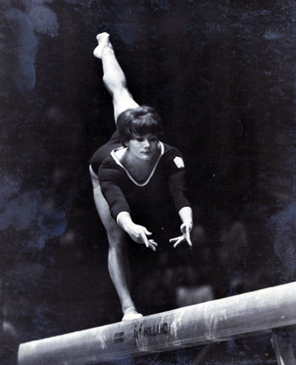

Mariana Krajcirova (CSSR)
1967 European AA and Uneven Bars Bronze Medalist

Medal Total
Olympic Games: 2
Silver
World Championships: 1 Gold, 1 Bronze
European Championships: 2 Bronze
Mariana was born on July 1, 1948 in Kosice. When she was 9, she moved to Bratislava and took up gymnastics. Mariana was the only Slovak gymnast on the 1964 Olympic team, and is the msot successful gymnast in the history of Slovak sports. After retiring from sport in 1972, she graduated from the Faculty of Physical Education and Sports at Comenius University in Bratislava and worked as a coach in that city for almost 20 years. Her daughter, Mariana Nemethova (born January 23, 1974), followed in her mother's footsteps and placed 28th at the 1988 Jr. European Championships.
Competition Results
1963
Jr. CSSR-HUN Dual Meet: 1st Team, 1st AA
1964
Olympic Games: 2nd Team, 22nd AA
1966
CSSR Championships: 3rd AA
World Championships: 1st Team, 7th AA, 5th V
1967
European Championships: 3rd AA, 3rd UB, 4th V, 4th FX,
5th B
Pre-Olympics: 2nd AA
1968
Olympic Games: 2nd Team, 9th AA, 4th V
1970
CSSR Championships: 1st AA, 1st UB, 1st B, 2nd V
ROM-CSSR Dual Meet: 1st Team, 1st AA
World Championships: 3rd Team, 20th AA, 4th UB
1972
CSSR Championships: 5th AA
Olympic Games: 18th AA
USSR-CSSR Dual Meet: 2nd Team, 4th AA, 2nd UB, 3rd V
This page was created on March 13,
2005 and was last updated on February 17, 2020.
© Gymn Forum